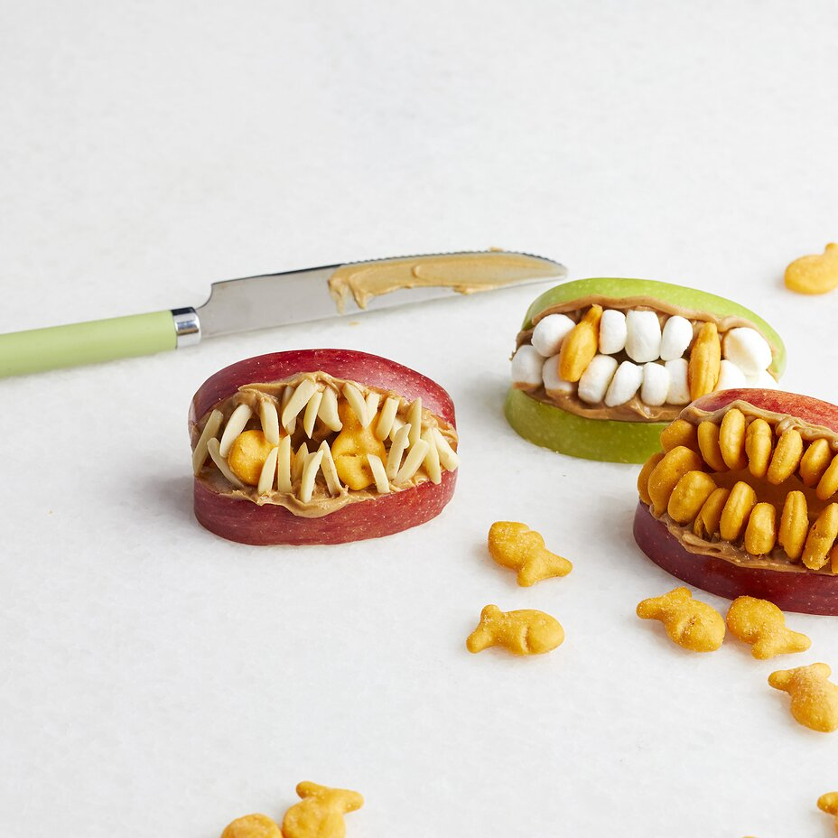

Zombie Lips

Description
There truly is not better way to teach
your children about the joys of necrophilia
than to start them young. Time to turn teeth
on fruit into mouth on mouth with ZOMBIE LIPS!
Ingredients
- 1 medium apple
- ½ cup peanut butter
- ½ cup miniature fish-shaped crackers (such as Goldfish®), or as needed
Step
- Core apple and cut into 8 slices. Spread 1 tablespoon peanut butter on 1 side of an apple slice. Press fish crackers tail-first into peanut butter to form teeth. Repeat with another apple slice and gently put on top of first slice to form a mouth. Repeat with remaining apple slices.
Conclusion
This recipe will really give your kids the opportuniy to
transform their skill of gluing cardboard and macaroni together
into a practical ability. At least this food doesn't go straight in
the trash after a week on the fridge, right moms?